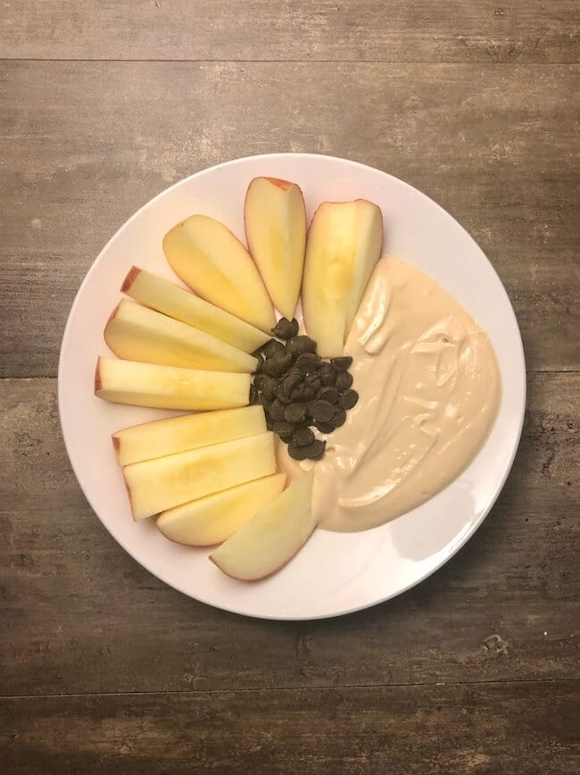

Apple and Greek Yogurt

Dead simple snacking
The simplest healthy snack arrangment with a touch of chocolate. Created by The Meal Prep Manual.
INGREDIENTS:
- 1 medium (120 g) apple
- ¾ cup (150 g) plain non fat Greek yogurt
- ½ tsp (2 g) splenda
- 1⅓ tbsp (20 g) mini chocolate chips
STEPS:
- Wash and cut the apple into slices.
- Mix the splenda into the Greek yogurt and plate with the apple.
- Add the chocolate chips to the bowl.